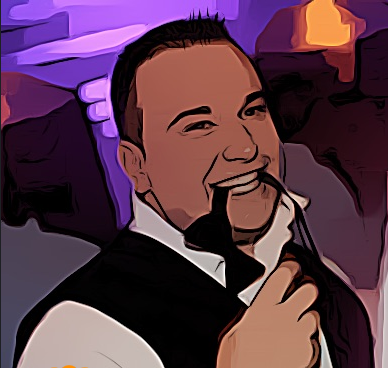

Oh, hi there!

My name's Joe and I'm a full stack web developer located in sunny San Diego, California.
As a full time web developer and graduate of Thinkful's Full Stack program, I'm proficient in most all of today's essential full stack web technologies. HTML, CSS, Javascript, JQuery, React, Node.js and PostgreSQL are among my areas of expertise.
After spending years on the business side of web technology, my thirst for creativity lead me to jump the fence over to the engineering side of the business. I'm passionate about bringing ideas and designs to life on web pages with precision and efficiency.
As a lifelong sports junkie, I have a competitive edge and strive to be an important part of a winning team. Please enjoy perusing my portfolio and feel free to contact me via email or LinkedIn!